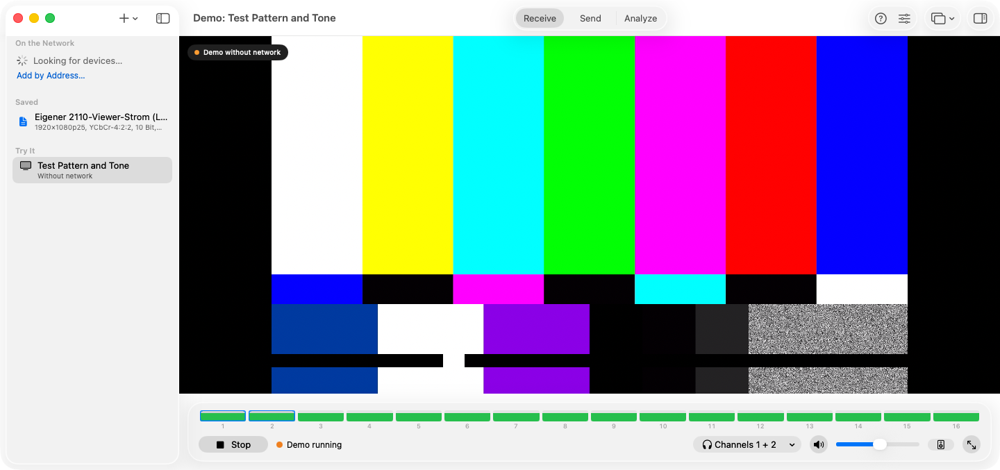
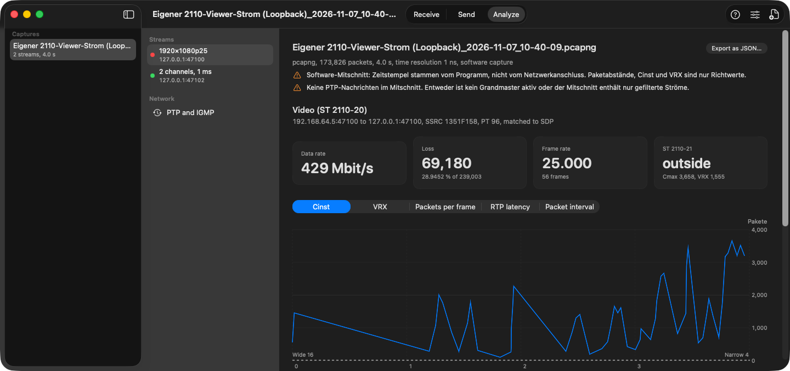
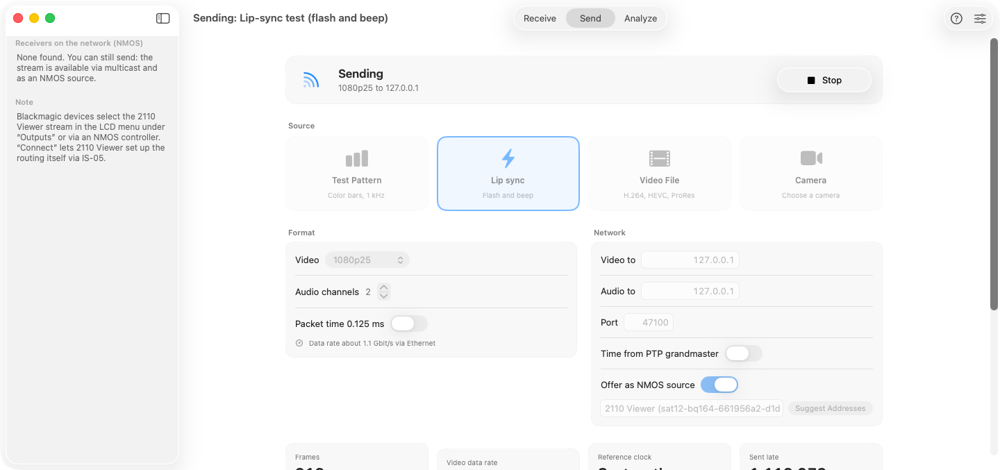
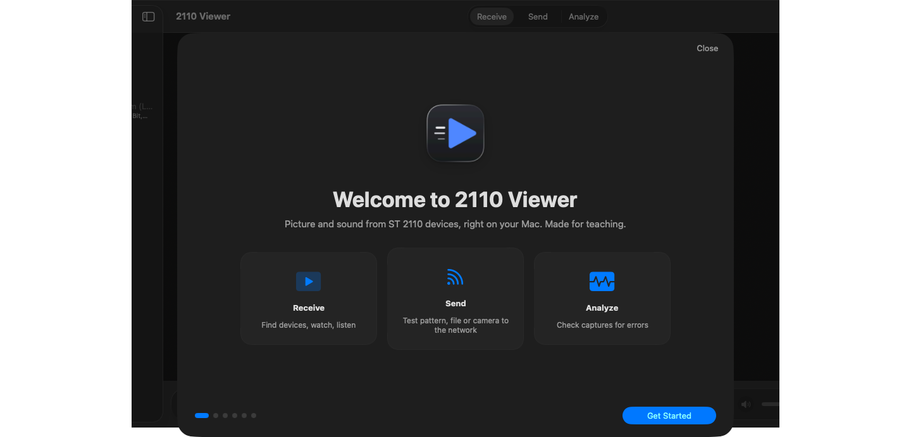

ST 2110 on the Mac.
Watch and listen to Blackmagic 2110 devices, send your own signals and analyze captures. Made for teaching.
Free for macOS 14 and later on Apple Silicon.
Receive, send, analyze.
Receive
Finds devices on the network by itself. Picture and sound stay in lip sync, on a second display if you like.
Send
Sends a test pattern, a video file or your camera as ST 2110 to a converter or any other device.
Analyze
Checks captures for packet loss, timing and PTP, much like EBU LIST.
Take a look.




Get started.
Download
Open the DMG and drag the app to Applications.
Connect
Connect the Mac over 10GbE to the switch or directly to the converter.
Watch
Devices appear on the left. One click and the picture is up.
The app is not notarized yet. On first launch, click “Open Anyway” once in System Settings under Privacy & Security.
The right connection.
The 3x3G needs real 10GbE. Adapters with 2.5 or 5 Gbit/s will not work.
| Adapter | Connection | Approx. price |
|---|---|---|
| Built into Mac Studio or Mac mini (option) | RJ-45 | included in the Mac |
| Sonnet Solo10G | Thunderbolt 3 | 230–270 € |
| OWC Thunderbolt 10G Ethernet | Thunderbolt | 165–200 $ |
| ORICO, IOCREST | Thunderbolt 3 | 85–130 $ |
As of November 2026. More in the adapter list.
Open to everyone.
The code is MIT licensed. Every release comes with the source code of all embedded libraries.